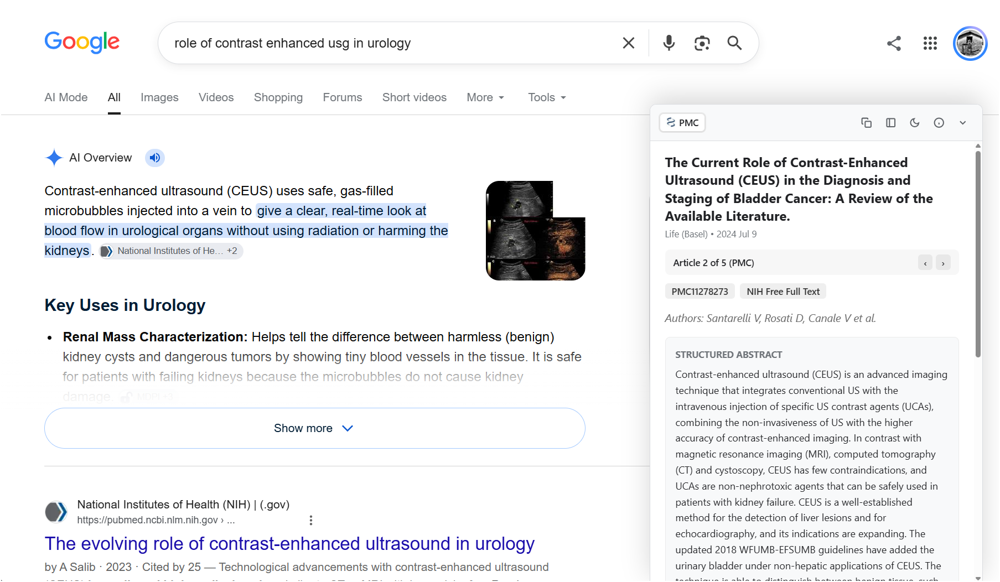
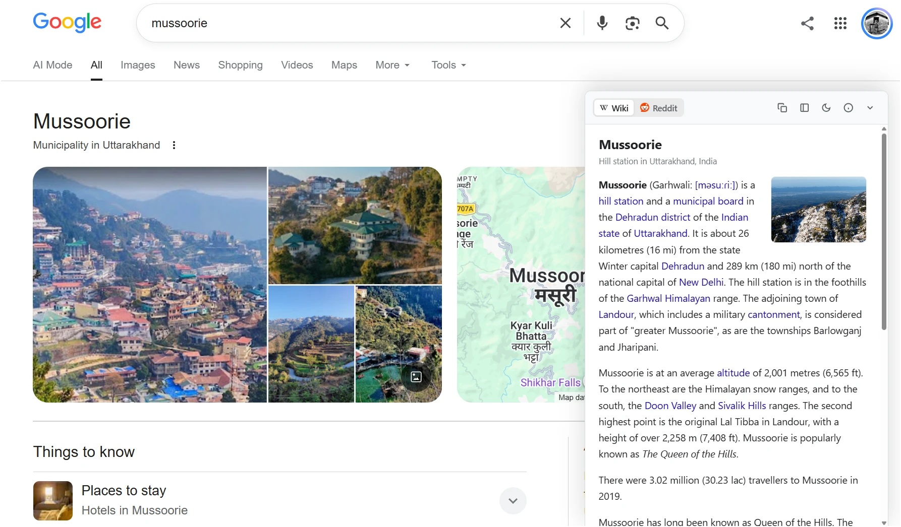
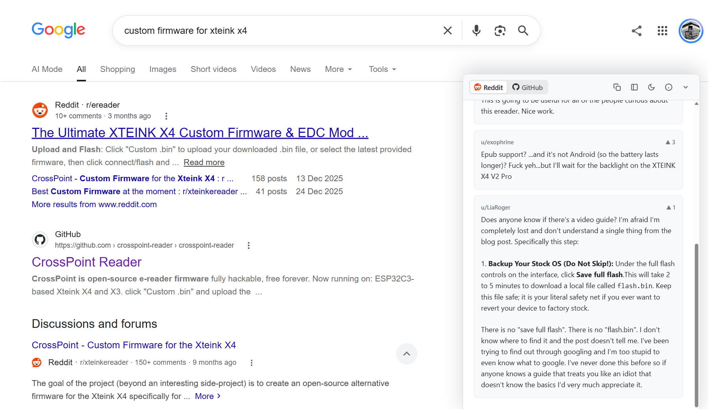

Userscripts
Two Tampermonkey scripts I wrote and keep installed day to day. Click install, Tampermonkey opens the diff and asks you to confirm — that's it, no build step.
SearchDeck Pro.
A companion deck that docks to the corner of a Google Search results page. As soon as the results contain a Wikipedia, Reddit, GitHub, or PubMed/PMC link, it fetches the summary, thread, repo, or abstract in the background and springs in with a little physical bounce — first click on the header fully expands it, so the answer's sitting there without a second tab.
- Four tabs — Wiki, Reddit, GitHub, PubMed/PMC — each populated only when the results page actually contains a matching link
- Reddit and PubMed/PMC both carousel through up to five matching threads/articles per page, with prev/next controls
- Docks left or right, minimizes on scroll, remembers dark mode and dock side per-device
- Tap-to-zoom on the Wikipedia thumbnail, one-click copy of whatever pane is open



Installing adds cross-origin fetches to en.wikipedia.org, reddit.com, github.com/raw.githubusercontent.com, and eutils.ncbi.nlm.nih.gov — that's what the permission prompt is about.
EAU Guidelines UI Enhancer.
A small fix for the EAU Guidelines site's table-of-contents, which otherwise scrolls away with the page instead of staying put next to the section you're reading. This pins it (sticky, with its own scrollbar) and adds a small floating stack in the corner for jumping straight to the full PDF or pocket guideline, plus a toggle to hide the "Ask Guidelines Bot" widget when it's in the way.
- Sticky, independently-scrolling chapter list instead of one that disappears past the fold
- One-tap shortcuts to the full PDF and pocket guideline download once the page renders them
- Toggle to hide the floating chat bot
No network permissions — it only touches the page's own DOM.
▶ Install EAU Guidelines UI EnhancerBoth need Tampermonkey (or another userscript manager) installed in your browser first.